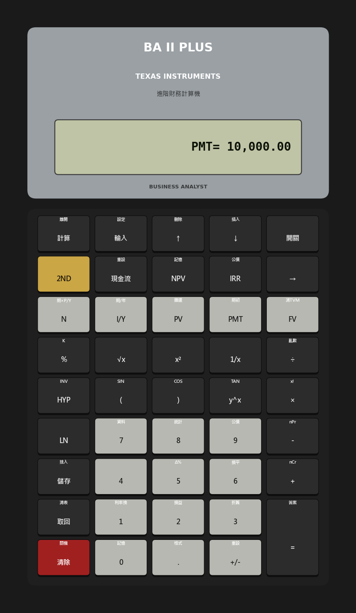
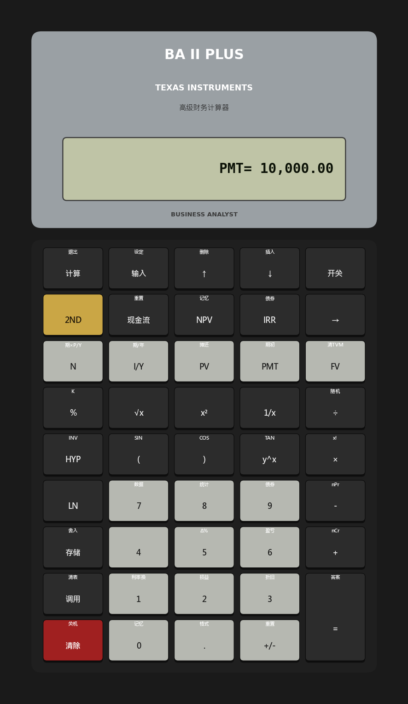

Side Lesson 01: The TI BA II Plus — Your Working Tool
1. Why This Is Important
There is exactly one piece of hardware that shows up in CFA exam halls, on bond-desk seats, in valuation interview rooms, and on the desks of serious retail investors who model their own positions: the **Texas Instruments BA II Plus**. It has been the industry default since the 1980s and remains the calculator that every certification body either permits explicitly (CFA, CMT, CIPM) or specifies by name (CFA, again).
The honest question is: *if I can do all of this in a spreadsheet, why should I learn the calculator?* Three reasons:
spreadsheet hides what direction the money is flowing. The BA II Plus refuses to let you forget. Press the keys wrong and it returns
Error 5 — "no solution exists." That feedback loop is precisely
the one a beginner needs.
conversation about time value of money is conducted in the
five-key vocabulary the calculator enforces: N, I/Y, PV,
PMT, FV. Once those are reflexive, every loan, every bond,
every dividend-discount model collapses into one sentence.
the spreadsheet are two independent implementations. If your DCF model in Excel disagrees with the BA II Plus on the same inputs, one of them is wrong — usually the spreadsheet, because it is easier to make an off-by-one period error there.
This side lesson teaches the calculator the way you would learn a musical instrument: enough theory to know what you are doing, then a lot of repetitions on canonical problems until your hands know the keystrokes without your head having to spell them out.
The interactive panel on the website is a working emulator of the device — you can run every example in this lesson directly in the browser without buying the physical unit. The static image above is your reference; the live calculator on the website is your practice field.
2. What You Need to Know
2.1 The Five TVM Keys — The Core Vocabulary
Every time-value-of-money problem in finance fits into the same algebraic identity, expressed in the calculator's five keys:
$$ PV \cdot (1+i)^N + PMT \cdot \frac{(1+i)^N - 1}{i} \cdot (1 + i \cdot \text{BGN}) + FV = 0 $$
The five inputs to that equation are exactly the five keys on the second row of the calculator:
N— number of compounding periods. Not years, not months,
N = 360, not 30.
I/Y— annual interest rate, entered as a percentage (8 for
P/Y internally to
reach the periodic rate.
PV— present value, the value of the money today.PMT— recurring periodic cash flow.FV— future value, the value at the end of the horizon.
CPT followed by the fifth, and the calculator solves for
it.** That is the whole game.
The two auxiliary settings sit above the row:
P/Y(2NDthenI/Y) — payments per year (12 for monthly,
BGN/END(2NDthenPMT) — does the payment happen at
END. The display shows BGN when you
toggle into begin mode.
2.2 The Sign Convention — Where Beginners Stumble
The BA II Plus uses a strict cash-flow sign convention.
- Negative (
-) = money leaving your pocket (an outflow). - Positive (
+) = money arriving in your pocket (an inflow).
| Action | Sign |
|---|---|
| Invest $1,000 today | PV = -1000 |
| Receive $1,500 in 5 years | FV = +1500 |
| Pay $500 of mortgage every month | PMT = -500 |
| Receive $2,000 of rent every month | PMT = +2000 |
| Borrow $300,000 from the bank | PV = +300000 (money to you) |
| Pay back the loan in full | FV = 0 (loan extinguished) |
If PV and FV carry the same sign, the calculator believes money is
flowing the same direction at both ends of the timeline — which makes
no economic sense for almost any real problem — and returns Error 5.
That error is a feature: the calculator is telling you the problem
as you posed it has no solution because the cash-flow story is
contradictory. Re-read the problem and check signs.
2.3 Three Canonical Problems — The Calculator's Hello World
These are the three patterns that show up endlessly. The interactive demo on the website has each pre-loaded as a "Try it" preset so you can watch the keystrokes execute and read the same answer.
Problem 1 — Future value of a lump sum. You invest $10,000 today at 8% per year for 20 years. What does it become?
| Step | Keystroke | Display |
|---|---|---|
| Reset | 2ND FV (CLR TVM) | 0.00 |
2ND I/Y set P/Y = 1 | P/Y=1 | |
| Periods | 20 N | 20.00 |
| Rate | 8 I/Y | 8.00 |
| Outflow today | 10000 +/- PV | -10,000.00 |
| No periodic payment | 0 PMT | 0.00 |
| Solve | CPT FV | 46,609.57 |
That number — $46,609.57 — is the price of compounding for 20 years at 8% real, in nominal dollars. (The Week 1 lesson is about why an *8% real number is fictional; the math* of the calculation, however, is exactly this.)
Problem 2 — Mortgage payment. You borrow $300,000 over 30 years at 6.5% annual interest, paid monthly. What is the monthly payment?
| Step | Keystroke | Display |
|---|---|---|
| Reset | 2ND FV | 0.00 |
| Set monthly | 2ND I/Y set P/Y = 12 | P/Y=12 |
| Periods (30 × 12) | 360 N | 360.00 |
| Annual rate | 6.5 I/Y | 6.50 |
| Loan to you | 300000 PV | 300,000.00 |
| Loan paid off at end | 0 FV | 0.00 |
| Solve | CPT PMT | -1,896.20 |
The negative sign is the calculator reminding you the payment leaves your pocket each month. Multiply by 360 and you have paid roughly $682,632 to retire a $300,000 loan — the rest is interest, which is the deeper point most homeowners do not internalise the first time they sign the papers.
Problem 3 — Bond yield to maturity. A bond costs $950 today, pays a $50 coupon every year for 10 years, and returns $1,000 at maturity. What is its yield to maturity?
| Step | Keystroke | Display |
|---|---|---|
| Reset | 2ND FV | 0.00 |
| Annual | 2ND I/Y set P/Y = 1 | P/Y=1 |
| Periods | 10 N | 10.00 |
| You pay today | 950 +/- PV | -950.00 |
| Coupon to you | 50 PMT | 50.00 |
| Par at maturity | 1000 FV | 1,000.00 |
| Solve | CPT I/Y | 5.66 |
Why does the answer come out higher than the 5% coupon? Because you bought below par. Every dollar of the $50 discount you got at purchase ($1,000 face minus $950 paid) shows up as additional yield over the ten-year holding period. The calculator does the algebra; you supply the intuition that coupon ≠ yield whenever the price is not par.
2.4 The Cash Flow Worksheet — When Payments Are Uneven
The five TVM keys handle level annuities — same payment every period.
Real-world investing problems rarely look that clean. Project evaluation,
uneven dividends, lumpy capex schedules — these all need the CF
worksheet (the CF key, top row).
The keystroke pattern:
CF to enter the worksheet. The display shows CF0.
press ENTER.
↓ arrow. The display shows C01.ENTER. Press ↓. The
display shows F01 — the frequency of that cash flow (how many
consecutive periods it repeats). Type 1 and ENTER if it
happens once, or a higher number if a constant cash flow repeats.
↓ again to reach C02, and so on, up to C24.Once the cash flows are entered:
- NPV. Press
NPV. The display asks forI— the discount rate
ENTER, press ↓, then
CPT. The displayed number is the net present value at that
discount rate.
- IRR. Press
IRR, thenCPT. The displayed number is the
Worked example. A project costs $1,000 today and pays $300 in year 1, $400 in year 2, $500 in year 3. At a 10% required return, should you take it?
CF0 = -1000,C01 = 300,C02 = 400,C03 = 500.- Press
NPV, setI = 10, compute. The result is $36.91. - A positive NPV means the project clears the 10% hurdle by
- Press
IRR, thenCPT. The result is roughly 12.0% — the
The interactive emulator on the website includes this exact problem as a preset; click it and the tape walks you through the keystrokes.
2.5 The Habits That Stop You Making Calculator Mistakes
These five habits, in this order, prevent the most common errors.
2ND FV clears the five TVM
registers. The single most common cause of a wrong answer is a
leftover value in FV or PMT from the last problem.
keep P/Y = 1 permanently and manually adjust N (multiply
years by frequency) and I/Y (divide annual rate by frequency).
Others prefer to set P/Y per problem. Either is fine; mixing
the two is what blows up.
problem. Decide which way each cash flow flows from your seat. Then enter the signs without hesitation.
any cash flow paid at the start of each period, you need
BGN mode (2ND PMT). The display shows BGN when active;
if it doesn't, you're in END.
does not check that the algebra answers the question you meant to ask. A monthly payment of $-189.62 on a $300,000 mortgage should immediately strike you as wrong — that would be ten cents a day on a city apartment. You have an extra zero somewhere.
2.6 Where the Calculator Stops and the Spreadsheet Begins
The BA II Plus is the right tool for closed-form time-value problems
— anything that fits the five-key TVM identity, plus uneven cash flows
through the CF worksheet, plus the bond worksheet (2ND 9) for
clean-price-versus-yield, plus statistical functions (2ND 7,
2ND 8) for quick mean and standard deviation.
It is the wrong tool for:
- Anything iterative or path-dependent. Monte Carlo, scenario
- Anything where you want to keep the inputs visible. A
- Anything optimisation-shaped. Solver in Excel, optimisation
The professional workflow is to use the calculator to check the spreadsheet, not to replace it. They are independent implementations of the same math, which is exactly why running both catches errors that running either alone would miss.
3. Common Misconceptions
**Misconception 1: "I can just use Excel, so I don't need the calculator."**
Excel is more powerful and more flexible, but it abstracts away the
sign convention that the calculator forces you to face. Beginners who
skip the calculator and go straight to =PMT() and =NPV() in Excel
routinely build models with reversed signs that produce
plausible-looking but wrong answers. The calculator is a discipline.
Once it is reflexive, the spreadsheet becomes safer.
Misconception 2: "N is the number of years."
N is the number of compounding periods, matched to the payment
frequency. A 5-year auto loan with monthly payments has N = 60,
not 5. A 10-year semi-annual coupon bond has N = 20, not 10.
Mismatch this and every TVM answer comes out wrong.
Misconception 3: "I/Y is the periodic interest rate."
I/Y is the annual rate. The calculator divides by P/Y
internally. If you have a monthly problem with P/Y = 12 and the
annual rate is 6%, you enter I/Y = 6, not 0.5. (If you instead
keep P/Y = 1 and adjust manually, then yes, you would type 0.5.
Pick a convention and stick to it.)
**Misconception 4: "The sign doesn't matter as long as the magnitude is right."**
The sign is the entire mechanism the calculator uses to know which way
the cash flows. Same-signed PV and FV will routinely produce
Error 5, or worse, plausible-looking gibberish. Never enter a TVM
problem without writing down the sign of every cash flow first.
Misconception 5: "BGN mode is rarely used and I can ignore it."
BGN matters whenever payments occur at the start of each period:
rent paid in advance, lease payments, retirement annuities that pay
at the start of each year, insurance premiums paid up front. The
default is END. If the problem says "annuity due" or "payments at
the beginning of the period," toggle BGN on (2ND PMT). The
display will show BGN when active.
**Misconception 6: "NPV and IRR always agree on the accept/reject decision."**
For independent projects with conventional cash flows (one outflow followed by inflows), they agree. For mutually exclusive projects or for non-conventional cash flows (multiple sign changes), they can disagree — and IRR can also produce multiple roots, none of which is the "right" rate of return. **When NPV and IRR disagree, trust NPV.** The orthodox CFA answer to this is the same as the practical finance answer.
Misconception 7: "A higher IRR is always a better project."
IRR has three structural problems: it implicitly assumes intermediate cash flows are reinvested at the IRR itself (rarely true), it can produce multiple solutions when cash flows change sign more than once, and it ignores project scale. A 50% IRR on $100 of capital is not better than a 20% IRR on $1,000,000 — the second project earns more dollars by orders of magnitude.
**Misconception 8: "The calculator is less accurate than a spreadsheet."**
The BA II Plus carries 13 digits of internal precision, which matches or exceeds spreadsheet calculations for ordinary financial problems. Display rounding to 2 decimals is presentation, not calculation. Where the two ever disagree on an everyday TVM problem, the spreadsheet is wrong far more often than the calculator is.
4. Q&A
**Q1: My calculator returns Error 5 when I press CPT I/Y. What is
wrong?**
A: Error 5 means *no solution exists for the inputs as you have
entered them*. In nine cases out of ten, the cause is a sign error:
PV and FV (or PV and PMT) carry the same sign, telling the
calculator that money flows the same direction at every point in time. That is impossible for an interest-bearing instrument. Reverse one of the signs and recompute.
Q2: Should I keep P/Y = 1 permanently or change it per problem?
A: Either works. The "permanent P/Y = 1" convention is more robust
because it prevents the most common error in the entire calculator:
forgetting to change P/Y back after a monthly problem and then
computing the next problem at the wrong frequency. Many professionals
adopt it for that reason alone. The cost is that you must manually
multiply N by frequency (30 years × 12 = 360 months) and divide
I/Y by frequency (6.5% / 12 = 0.5417%) yourself.
Q3: How do I price a semi-annual-coupon bond?
A: Two ways, both correct.
- With
P/Y = 2:N= years × 2,I/Y= annual yield,PMT=
FV = par value (typically 1000), then
CPT PV. The result is the dirty (or clean, depending on your
convention) price.
- With
P/Y = 1:N= years × 2,I/Y= annual yield ÷ 2,PMT
FV = par. Same answer, different
bookkeeping.
Q4: How is the CF worksheet different from the TVM keys?
A: TVM is for level (constant) annuities. CF is for uneven cash flows. Use TVM for mortgages, standard bonds at par or premium, regular savings plans. Use CF for project evaluation, dividend streams that change year to year, real-estate cash flows with lumpy capex, and any situation where the period-by-period number is not constant. NPV and IRR live exclusively in the CF worksheet.
Q5: How do I handle a deferred annuity (payments start in year 5)?
A: Two TVM steps. Step one: compute the present value of the annuity
as of the date payments begin — that is the value of the annuity at
year 4, the period before the first cash flow. Step two: discount
that value back to today across the deferral period using a separate
TVM calculation with PMT = 0. The calculator has no built-in
deferred-annuity function; the two-step decomposition is how every
practitioner handles it.
**Q6: Can the BA II Plus compute Macaulay duration and modified duration?**
A: Yes — through the bond worksheet (2ND 9). Enter settlement
date, coupon rate, maturity date, redemption value, day count, and
either yield or price. Scrolling down past YLD/PRI reveals AI
(accrued interest), DUR (modified duration), and other fields.
Convexity is not exposed directly; you compute it manually from two
price points around the current yield, or do it in a spreadsheet.
**Q7: What is the difference between ordinary annuity and annuity due in calculator terms?**
A: Ordinary annuity = payments at the end of each period = END
mode (the default). Annuity due = payments at the beginning of each
period = BGN mode (toggle with 2ND PMT). For a positive interest
rate, an annuity due is always worth slightly more than the same
nominal annuity in END mode, by exactly one period of interest —
that is the discount the bondholder pays for the convenience of
getting the money at the start of the period.
Q8: Why does my mortgage payment come out negative?
A: Because it leaves your pocket every month. The negative sign is
the calculator telling you the direction of flow. The dollar
magnitude is what you write the cheque for; the sign is the
calculator's bookkeeping. If you typed PV as positive (the bank
hands you the money), then PMT must be negative (you hand the bank
the money). If both came out positive or both negative, you have a
sign error somewhere.
Q9: How accurate is the BA II Plus compared to Excel?
A: 13 internal digits, matching or beating typical spreadsheet
precision on TVM problems. The display rounds to your chosen format
(2 decimals by default; 2ND . lets you set 0–9). Where the
calculator and Excel disagree on a routine TVM problem, the bug is
almost always in the spreadsheet — usually an off-by-one period or a
misplaced sign in a cell formula.
Q10: Is there a free way to practise without buying the device?
A: Yes. The interactive panel embedded in this lesson on the website is a working emulator of the BA II Plus, including the five TVM keys, the cash-flow worksheet, NPV, IRR, P/Y settings, BGN/END toggle, and the canonical examples from this lesson pre-loaded as one-click presets. It is sufficient for every problem in the rest of the course. The physical unit is still worth owning if you intend to sit a CFA exam — they only allow the real device in the hall.
補充課01：TI BA II Plus — 你的實戰工具
1. 為何此事重要
有一款硬件，同時出現在CFA考場、債券部座位、估值面試室，以及會自行建立投資模型的認真散戶桌面上，那就是德州儀器BA II Plus。自1980年代起，它便是行業標配，至今仍是每個認證機構明確允許（CFA、CMT、CIPM）或指定使用（CFA，再次）的計算機。
一個誠實的問題：如果我可以用試算表做所有這些，為何還要學計算機？ 原因有三：
Error 5——「無解」。這個反饋機制正是初學者所需要的。N、I/Y、PV、PMT、FV。一旦這些成為本能反應，每一筆貸款、每一隻債券、每一個股息折現模型，都可濃縮成一句話。這堂補充課教你使用計算機的方式，就如同學習一件樂器：足夠的理論讓你知道自己在做什麼，然後在標準問題上大量重複練習，直至你的雙手不需要大腦指揮便能完成按鍵。
網站上的互動面板是該設備的工作模擬器——你可以直接在瀏覽器中運行本課的每個範例，無需購買實體機。上方靜態圖片是你的參考；網站上的即時計算機是你的練習場。
2. 你需要掌握的知識
2.1 五個TVM按鍵——核心詞彙
金融中每一個貨幣時間價值問題，都納入同一個代數恆等式，以計算機的五個按鍵表示：
$$ PV \cdot (1+i)^N + PMT \cdot \frac{(1+i)^N - 1}{i} \cdot (1 + i \cdot \text{BGN}) + FV = 0 $$
該方程的五個輸入，正好對應計算機第二行的五個按鍵：
N— 複利計算的期數。不是年，不是月，而是與付款頻率相匹配的期數。按月還款的30年按揭，N = 360，而非30。I/Y— 年利率，以百分比輸入（8代表8%，而非0.08）。計算機在內部除以P/Y，得出每期利率。PV— 現值，即今日資金的價值。PMT— 定期循環現金流。FV— 終值，即期末的價值。
CPT再按第五個鍵，計算機便求解它。 整個遊戲就是這樣。
兩個輔助設定位於該行上方：
P/Y（2ND然後I/Y）——每年付款次數（每月12次、每季4次、每半年2次、每年1次）。BGN/END（2ND然後PMT）——付款發生在每期末（普通年金，如按揭還款），還是初（期初年金，如預付租金）？預設為END。切換至期初模式時，顯示屏會顯示BGN。
2.2 符號規則——初學者的絆腳石
BA II Plus採用嚴格的現金流符號規則。
- 負數（
-）= 資金離開你的口袋（流出）。 - 正數（
+）= 資金進入你的口袋（流入）。
| 行為 | 符號 |
|---|---|
| 今日投資$1,000 | PV = -1000 |
| 5年後收到$1,500 | FV = +1500 |
| 每月支付$500按揭 | PMT = -500 |
| 每月收到$2,000租金 | PMT = +2000 |
| 向銀行借$300,000 | PV = +300000 （資金流入你） |
| 全額還清貸款 | FV = 0 （貸款結清） |
若PV與FV符號相同，計算機便認為資金在時間線兩端流向相同——對幾乎所有實際問題而言，這在經濟上說不通——並返回Error 5。這個錯誤是一項功能：計算機在告訴你，你所輸入的問題因現金流邏輯矛盾而無解。請重新審閱問題並核查符號。
2.3 三個標準問題——計算機的入門練習
以下三種模式反覆出現。網站上的互動示範已將每個問題預載為「試試看」預設，你可以觀看按鍵執行過程並讀取相同答案。
問題一——一次性金額的終值。 你今日以每年8%的利率投資$10,000，持續20年，最終得到多少？
| 步驟 | 按鍵 | 顯示 |
|---|---|---|
| 重置 | 2ND FV（CLR TVM） | 0.00 |
2ND I/Y 設定 P/Y = 1 | P/Y=1 | |
| 期數 | 20 N | 20.00 |
| 利率 | 8 I/Y | 8.00 |
| 今日流出 | 10000 +/- PV | -10,000.00 |
| 無定期付款 | 0 PMT | 0.00 |
| 求解 | CPT FV | 46,609.57 |
這個數字——$46,609.57——是在名義貨幣下，8%實際利率複利增長20年的代價。（第一週的課程講述為何8%實際收益率是虛構的；但計算本身的數學，正是如此。）
問題二——按揭還款。 你以6.5%年利率按月還款，借入$300,000，還款期30年，每月還款額是多少？
| 步驟 | 按鍵 | 顯示 |
|---|---|---|
| 重置 | 2ND FV | 0.00 |
| 設定每月 | 2ND I/Y 設定 P/Y = 12 | P/Y=12 |
| 期數（30 × 12） | 360 N | 360.00 |
| 年利率 | 6.5 I/Y | 6.50 |
| 貸款流入你 | 300000 PV | 300,000.00 |
| 期末還清 | 0 FV | 0.00 |
| 求解 | CPT PMT | -1,896.20 |
負號提醒你，每月付款從你口袋流出。乘以360，你合共支付了約$682,632來償還$300,000的貸款——餘額為利息，而這正是大多數業主在首次簽署文件時未能內化的深層意義。
問題三——債券到期收益率。 一隻債券今日售價$950，每年支付$50票息，為期10年，到期返還$1,000面值。其到期收益率是多少？
| 步驟 | 按鍵 | 顯示 |
|---|---|---|
| 重置 | 2ND FV | 0.00 |
| 每年 | 2ND I/Y 設定 P/Y = 1 | P/Y=1 |
| 期數 | 10 N | 10.00 |
| 今日支付 | 950 +/- PV | -950.00 |
| 票息流入你 | 50 PMT | 50.00 |
| 到期面值 | 1000 FV | 1,000.00 |
| 求解 | CPT I/Y | 5.66 |
為何答案高於 5%的票息率？因為你以低於面值的價格購入。你在購入時得到的$50折扣（$1,000面值減去$950購入價）在10年持有期內體現為額外收益率。計算機完成代數運算；你需要提供的直覺是——只要價格不等於面值，票息率≠收益率。
2.4 現金流工作表——當付款不均勻時
五個TVM按鍵處理等額年金——每期相同的付款。現實投資問題很少如此整齊。項目評估、不均勻的股息、零散的資本支出計劃——這些都需要CF工作表（頂行的CF鍵）。
按鍵步驟：
CF進入工作表，顯示屏顯示CF0。ENTER。↓方向鍵，顯示屏顯示C01。ENTER。再按↓，顯示屏顯示F01——該現金流的頻率（連續重複的期數）。若只發生一次，輸入1並按ENTER；若某個固定現金流重複，則輸入更大的數字。↓到達C02，如此類推，最多至C24。輸入現金流後：
- NPV（淨現值）。 按
NPV，顯示屏要求輸入I——每期折現率（百分比）。輸入數值，按ENTER，按↓，然後按CPT。顯示的數字即為該折現率下的淨現值。 - IRR（內部回報率）。 按
IRR，然後按CPT。顯示的數字是內部回報率——使NPV等於零的折現率。
CF0 = -1000，C01 = 300，C02 = 400，C03 = 500。- 按
NPV，設定I = 10，計算。結果為$36.91。 - 正數的NPV意味著該項目以$36.91超越了10%的門檻。接受此項目（假設輸入數據正確）。
- 按
IRR，然後按CPT。結果約為12.0%——使NPV恰好為零的折現率。由於12% > 10%，從另一角度得出相同結論。
2.5 避免計算機失誤的操作習慣
以下五個習慣，按此順序，可防止最常見的錯誤。
2ND FV清除五個TVM暫存器。得出錯誤答案的最常見原因，是上一道題留在FV或PMT中的數值。P/Y = 1，手動調整N（年數乘以頻率）和I/Y（年利率除以頻率）。另一些人則按題設定P/Y。兩者都可行；混用才是出問題的原因。BGN模式（2ND PMT）。顯示屏顯示BGN時表示已啟用；若未顯示，則處於END模式。2.6 計算機的邊界：何時改用試算表
BA II Plus適用於封閉式貨幣時間價值問題——任何符合五鍵TVM恆等式的問題，加上CF工作表處理的不均勻現金流，加上債券工作表（2ND 9）處理全價對收益率，以及統計函數（2ND 7、2ND 8）快速計算平均值和標準差。
它是以下情況的錯誤工具：
- 任何迭代或路徑相依的問題。 蒙地卡羅模擬、情景分析、假設分析表——請用試算表。
- 任何需要同時查看所有輸入的情況。 試算表可一次顯示360期按揭付款；計算機一次只顯示一個數字。
- 任何優化類型的問題。 Excel的規劃求解、Python的優化庫——計算機沒有相應功能。
3. 常見誤解
誤解一：「我能用Excel，所以不需要計算機。」
Excel功能更強大、更靈活，但它抽象掉了計算機強制你面對的符號規則。跳過計算機直接使用Excel中=PMT()和=NPV()的初學者，常常建立出符號倒置的模型，產生看似合理卻錯誤的答案。計算機是一種訓練。一旦成為本能，試算表才能用得更安全。
誤解二：「N是年數。」
N是複利計算期數，與付款頻率相匹配。5年按月還款的汽車貸款，N = 60，而非5。10年每半年付息的債券，N = 20，而非10。若弄錯此項，所有TVM答案均告錯誤。
誤解三：「I/Y是每期利率。」
I/Y是年利率，計算機在內部除以P/Y。若你有一個按月計算的問題，P/Y = 12，年利率為6%，則輸入I/Y = 6，而非0.5。（若你改為保持P/Y = 1並手動調整，那麼你確實需要輸入0.5。選定一種規則並堅持。）
誤解四：「只要數值大小正確，符號無所謂。」
符號是計算機判斷現金流方向的整個機制。PV和FV符號相同，通常會產生Error 5，或更糟糕的是，產生看似合理的胡亂結果。永遠不要在未先寫下每筆現金流符號的情況下輸入TVM問題。
誤解五：「BGN模式很少用到，我可以忽略。」
每當付款發生在每期初時，BGN就很重要：預付租金、租約付款、在每年初支付的退休年金、預繳保費。預設為END。若問題提及「期初年金」或「在期初付款」，請切換BGN（2ND PMT）。啟用時顯示屏會顯示BGN。
誤解六：「NPV和IRR在接受/拒絕決策上總是一致的。」
對於具有常規現金流（一筆流出後跟隨流入）的獨立項目，兩者一致。對於互斥項目或非常規現金流（多次換向），兩者可能不一致——IRR也可能產生多個根，其中沒有一個是「正確」的回報率。當NPV和IRR不一致時，信任NPV。 CFA的標準答案與實務金融的答案相同。
誤解七：「IRR越高，項目越好。」
IRR有三個結構性問題：它隱含假設中間現金流以IRR本身再投資（現實中很少如此）；當現金流換向超過一次時，可能產生多個解；而且它忽略項目規模。$100資本上的50% IRR，並不優於$1,000,000資本上的20% IRR——後者的盈利金額在數量級上遠超前者。
誤解八：「計算機的精確度不及試算表。」
BA II Plus具有13位內部精度，在一般金融問題上與試算表計算相當甚至更勝一籌。顯示四捨五入至小數點後兩位是呈現方式，而非計算方式。在日常TVM問題上，計算機與Excel若有分歧，幾乎都是試算表有誤——通常是某個儲存格公式中差了一個期數或符號放錯位置。
4. 問答
問題1：我按CPT I/Y時，計算機返回Error 5，是什麼問題？
答：Error 5意味著你輸入的數據無解。九成情況下，原因是符號錯誤：PV和FV（或PV和PMT）符號相同，告訴計算機資金在時間線的每個節點都朝同一方向流動。這對生息工具而言是不可能的。將其中一個符號反轉後重新計算。
問題2：我應永久保持P/Y = 1，還是按題設定？
答：兩者都可行。「永久P/Y = 1」規則更穩健，因為它防止了整個計算機中最常見的錯誤：在一道按月計算的問題後，忘記將P/Y改回來，導致下一道題以錯誤頻率計算。許多專業人士僅因此原因便採用此規則。代價是你需手動將N乘以頻率（30年 × 12 = 360個月），以及將I/Y除以頻率（6.5% / 12 = 0.5417%）。
問題3：如何計算半年付息債券的價格？
答：兩種方法，均正確。
- 使用
P/Y = 2：N= 年數 × 2，I/Y= 年化收益率，PMT= 年票息的一半，FV= 面值（通常為1000），然後CPT PV。結果為含息（或除息，視規則）價格。 - 使用
P/Y = 1：N= 年數 × 2，I/Y= 年化收益率 ÷ 2，PMT= 年票息的一半，FV= 面值。答案相同，記賬方式不同。
答：TVM用於等額（固定）年金；CF用於不均勻現金流。按揭、標準面值或溢價債券、定期儲蓄計劃——用TVM。項目評估、逐年變動的股息流、有零散資本支出的房地產現金流，以及任何每期金額不固定的情況——用CF。NPV和IRR僅存在於CF工作表中。
問題5：如何處理遞延年金（付款從第5年開始）？
答：分兩步進行TVM計算。第一步：計算從付款開始日起的年金現值——即第4年（首筆現金流前一期）的年金價值。第二步：將該價值通過另一次TVM計算折現至今日，設PMT = 0。計算機沒有內置的遞延年金函數；兩步分解法是每位從業者的處理方式。
問題6：BA II Plus能計算麥考利存續期和修正存續期嗎？
答：可以——通過債券工作表（2ND 9）。輸入結算日、票息率、到期日、贖回價值、日計基準，以及收益率或價格。在YLD/PRI之後繼續下翻，會顯示AI（應計利息）、DUR（修正存續期）及其他欄位。凸性未直接顯示；你需從當前收益率附近的兩個價格點手動計算，或在試算表中完成。
問題7：普通年金與期初年金在計算機操作上有何區別？
答：普通年金 = 每期末付款 = END模式（預設）。期初年金 = 每期初付款 = BGN模式（以2ND PMT切換）。在正利率下，期初年金的價值始終略高於相同名義金額的END模式年金，相差恰好一期利息——這正是在期初收到資金的便利所需支付的折讓。
問題8：為何我的按揭還款額是負數？
答：因為它每月從你口袋流出。負號是計算機告知你資金流向的方式。金額大小是你簽支票的數字；符號是計算機的記賬方式。若你將PV輸入為正數（銀行將錢交給你），則PMT必須為負數（你將錢交給銀行）。若兩者同為正數或同為負數，你某處有符號錯誤。
問題9：BA II Plus與Excel相比，精確度如何？
答：13位內部精度，在TVM問題上與試算表精度相當或更勝一籌。顯示四捨五入至你選擇的格式（預設2位小數；2ND .可設定0至9位）。計算機與Excel在常規TVM問題上若有分歧，幾乎必定是試算表有漏洞——通常是某個儲存格公式中差了一個期數或符號放錯位置。
問題10：有無免費方式在不購買設備的情況下練習？
答：有。本課網站上嵌入的互動面板，是BA II Plus的工作模擬器，包含五個TVM按鍵、現金流工作表、NPV、IRR、P/Y設定、BGN/END切換，以及本課的標準範例（已預載為一鍵預設）。它足以應對本課程其餘所有問題。若你打算參加CFA考試，實體機仍值得購買——考場只允許使用真實設備。
補充課 01：TI BA II Plus — 你的實戰工具
1. 為什麼這很重要
在 CFA 考場、債券交易席位、估值面試室，以及認真自行建模的散戶投資人桌上，只有一款硬體設備始終如一地出現：德州儀器 BA II Plus。自 1980 年代起，它便是業界的預設標準，也是每個認證機構明確核准（CFA、CMT、CIPM）或直接點名指定的計算機（尤其是 CFA）。
一個誠實的問題是：既然試算表能做到這一切，為什麼我還要學計算機？ 原因有三：
Error 5——「無解」。這個回饋機制，正是初學者最需要的。N、I/Y、PV、PMT、FV。一旦這五個鍵成為反射動作，每一筆貸款、每一檔債券、每一個股利折現模型，都能用一句話說清楚。這堂補充課教你使用計算機的方式，就像學習一件樂器：先有足夠的理論知識讓你知道自己在做什麼，然後在經典題型上大量反覆練習，直到你的雙手不需要大腦拼出按鍵步驟。

網站上的互動面板是本裝置的完整模擬器——你可以直接在瀏覽器中執行本課的每個範例，無需購買實體機。上方的靜態圖片是你的參考資料；網站上的即時計算機則是你的練習場地。
2. 你需要知道的內容
2.1 五個貨幣時間價值按鍵——核心詞彙
金融領域中每一道貨幣時間價值問題，都符合同一個代數恆等式，以計算機的五個按鍵表示：
$$ PV \cdot (1+i)^N + PMT \cdot \frac{(1+i)^N - 1}{i} \cdot (1 + i \cdot \text{BGN}) + FV = 0 $$
該等式的五個變數，正好對應計算機第二排的五個按鍵：
N— 複利期數。不是年數，不是月數，而是與支付頻率相對應的期數。一筆按月還款的 30 年房貸，N = 360，而非30。I/Y— 年利率，以百分比輸入（8% 輸入 8，而非 0.08）。計算機內部會將其除以P/Y以得出每期利率。PV— 現值，即今日的資金價值。PMT— 定期重複現金流量。FV— 終值，即期末的資金價值。
CPT 再按第五個，計算機即自動求解。 整個操作就是這樣。
第二排上方還有兩個輔助設定：
P/Y（2ND再按I/Y）—— 每年支付次數（月付為 12，季付為 4，半年付為 2，年付為 1）。BGN/END（2ND再按PMT）—— 付款發生在每期期末（普通年金，如房貸還款）還是期初（預付年金，如預付租金）？預設值為END。切換至期初模式時，螢幕顯示BGN。
2.2 符號慣例——初學者常在此卡關
BA II Plus 採用嚴格的現金流量符號慣例。
- 負號（
-）＝ 資金離開你的口袋（流出）。 - 正號（
+）＝ 資金進入你的口袋（流入）。
| 操作 | 符號 |
|---|---|
| 今日投入 $1,000 | PV = -1000 |
| 5 年後收回 $1,500 | FV = +1500 |
| 每月繳納 $500 房貸 | PMT = -500 |
| 每月收取 $2,000 租金 | PMT = +2000 |
| 向銀行借款 $300,000 | PV = +300000（錢進入你的口袋） |
| 貸款全數還清 | FV = 0（貸款清償） |
若 PV 與 FV 符號相同，計算機會認為資金在時間軸兩端流動方向一致——這對幾乎所有實際問題而言都不具備經濟意義——並回傳 Error 5。這個錯誤是一項功能：計算機在告訴你，你所輸入的問題因現金流量邏輯矛盾而無解。重新閱讀題目，確認符號。
2.3 三個經典題型——計算機的 Hello World
以下三種模式將反覆出現。網站上的互動示範已將每題預載為「立即試算」預設題，你可以觀察按鍵操作並讀取相同答案。
題型一——一次性投入的終值。 你今日投入 $10,000，年報酬率 8%，持有 20 年。結果為何？
| 步驟 | 按鍵操作 | 螢幕顯示 |
|---|---|---|
| 重置 | 2ND FV（CLR TVM） | 0.00 |
2ND I/Y 設定 P/Y = 1 | P/Y=1 | |
| 期數 | 20 N | 20.00 |
| 利率 | 8 I/Y | 8.00 |
| 今日流出 | 10000 +/- PV | -10,000.00 |
| 無定期支付 | 0 PMT | 0.00 |
| 求解 | CPT FV | 46,609.57 |
這個數字——$46,609.57——是在名目美元下，以 8% 複利成長 20 年的代價。（第 1 週的課程說明了為何8% 實質報酬是虛構的；然而這個計算的數學本身，正是如此。）
題型二——房貸還款金額。 你以年利率 6.5% 借款 $300,000，分 30 年按月還款。每月還款金額為何？
| 步驟 | 按鍵操作 | 螢幕顯示 |
|---|---|---|
| 重置 | 2ND FV | 0.00 |
| 設為月付 | 2ND I/Y 設定 P/Y = 12 | P/Y=12 |
| 期數（30 × 12） | 360 N | 360.00 |
| 年利率 | 6.5 I/Y | 6.50 |
| 銀行撥款給你 | 300000 PV | 300,000.00 |
| 期末還清貸款 | 0 FV | 0.00 |
| 求解 | CPT PMT | -1,896.20 |
負號提醒你，這筆款項每月從你的口袋流出。乘以 360，你共支付了約 $682,632 以還清 $300,000 的貸款——其餘皆為利息，這也是多數屋主在第一次簽約時未能深刻體會的重點。
題型三——債券到期殖利率。 一檔債券今日售價 $950，每年支付 $50 票面利率，持有 10 年，到期償還 $1,000。其到期殖利率為何？
| 步驟 | 按鍵操作 | 螢幕顯示 |
|---|---|---|
| 重置 | 2ND FV | 0.00 |
| 年付 | 2ND I/Y 設定 P/Y = 1 | P/Y=1 |
| 期數 | 10 N | 10.00 |
| 今日支付 | 950 +/- PV | -950.00 |
| 票面利率流入 | 50 PMT | 50.00 |
| 到期面額 | 1000 FV | 1,000.00 |
| 求解 | CPT I/Y | 5.66 |
為何答案高於 5% 的票面利率？因為你以低於面額的價格購入。你在買入時獲得的 $50 折價（$1,000 面額減去支付的 $950），將在十年持有期間體現為額外報酬。計算機完成代數運算；你則需具備這樣的直覺：只要價格不等於面額，票面利率就不等於殖利率。
2.4 現金流量工作表——當期款不均等時
五個貨幣時間價值按鍵處理的是等額年金——每期支付金額相同。現實投資問題鮮少如此整齊。專案評估、不規則股利、分散的資本支出計畫——這些都需要使用 CF 工作表（最上排的 CF 鍵）。
按鍵流程：
CF 進入工作表，螢幕顯示 CF0。ENTER。↓ 方向鍵，螢幕顯示 C01。ENTER。再按 ↓，螢幕顯示 F01——即該現金流量的頻率（重複發生的連續期數）。若只發生一次輸入 1 再按 ENTER；若某固定金額連續重複則輸入對應次數。↓ 進入 C02，依此類推，最多可輸入至 C24。現金流量輸入完畢後：
- 淨現值（NPV）。 按
NPV，螢幕詢問I——以百分比表示的每期折現率。輸入後按ENTER，按↓，再按CPT。螢幕顯示的數字即為該折現率下的淨現值。 - 內部報酬率（IRR）。 按
IRR，再按CPT。螢幕顯示的數字即為內部報酬率——使淨現值等於零的折現率。
CF0 = -1000、C01 = 300、C02 = 400、C03 = 500。- 按
NPV，設定I = 10，求解。結果為 $36.91。 - 正的淨現值表示此專案在 10% 的門檻率下仍多出 $36.91 的價值。應接受此專案（假設輸入數據正確）。
- 按
IRR，再按CPT。結果約為 12.0%——使淨現值恰好為零的折現率。由於 12% > 10%，從不同角度得出相同結論。
2.5 避免計算機失誤的五個習慣
以下五個習慣，按順序執行，可防止最常見的錯誤。
2ND FV 清除五個貨幣時間價值暫存器。答案錯誤最常見的原因，是上一道題遺留在 FV 或 PMT 中的數值。P/Y = 1 設為永久值，手動調整 N（年數乘以頻率）和 I/Y（年利率除以頻率）。也有人偏好每題更換 P/Y。兩種方式都可行；混用才會出錯。BGN 模式（2ND PMT）。啟用時螢幕顯示 BGN；若無顯示，則為 END 模式。2.6 計算機的適用範疇與試算表的起點
BA II Plus 是處理封閉解貨幣時間價值問題的正確工具——任何符合五鍵貨幣時間價值恆等式的問題，加上透過 CF 工作表處理的不均等現金流量，再加上債券工作表（2ND 9）處理整數價格對殖利率的換算，以及統計功能（2ND 7、2ND 8）快速計算平均數與標準差。
以下情況則不適用：
- 任何需要迭代或路徑相依的運算。 蒙地卡羅、情境分析、假設模擬——請用試算表。
- 任何需要同時看到所有輸入的情況。 試算表可以一次顯示 360 期房貸還款；計算機一次只顯示一個數字。
- 任何最佳化問題。 Excel 的規劃求解、Python 的最佳化函式庫——計算機沒有對應功能。
3. 常見迷思
迷思一：「我會用 Excel，所以不需要計算機。」
Excel 更強大也更靈活，但它抽象化了計算機強制你面對的符號慣例。跳過計算機直接使用 Excel =PMT() 和 =NPV() 的初學者，往往建出符號顛倒、看起來合理卻答案錯誤的模型。計算機是一種訓練紀律的工具。一旦操作成為反射，試算表才能更安全地使用。
迷思二：「N 是年數。」
N 是複利期數，與支付頻率相對應。5 年期按月還款的汽車貸款，N = 60 而非 5。10 年期半年付息債券，N = 20 而非 10。搞錯這個，所有貨幣時間價值的答案都會出錯。
迷思三：「I/Y 是每期利率。」
I/Y 是年利率。計算機內部會除以 P/Y。若月付問題設定 P/Y = 12，且年利率為 6%，輸入 I/Y = 6 而非 0.5。（若你保持 P/Y = 1 手動調整，則確實應輸入 0.5。選定一種慣例，始終一致。）
迷思四：「符號不重要，數值對就好。」
符號是計算機判斷現金流量方向的整套機制。PV 和 FV 符號相同，通常會產生 Error 5，或更糟——看起來合理卻完全錯誤的數字。輸入任何貨幣時間價值問題前，務必先寫下每筆現金流量的符號。
迷思五：「BGN 模式很少用，可以忽略。」
只要付款發生在每期期初，BGN 就至關重要：預付租金、租約款項、年初支付的退休年金、預繳保費。預設值為 END。若題目說「預付年金」或「每期期初支付」，請切換至 BGN 模式（2ND PMT）。啟用時螢幕顯示 BGN。
迷思六：「淨現值和內部報酬率的接受/拒絕決策一定一致。」
對於具有傳統現金流量（一次流出後接連流入）的獨立專案，兩者確實一致。但對於互斥專案或非傳統現金流量（多次符號變換），兩者可能相左——且內部報酬率可能產生多個根，沒有一個是「正確」的報酬率。當淨現值與內部報酬率相矛盾時，以淨現值為準。 這既是 CFA 的標準答案，也是實務金融的標準答案。
迷思七：「內部報酬率越高，專案越好。」
內部報酬率有三個結構性缺陷：它隱含假設中間現金流量以內部報酬率本身再投資（現實中幾乎不成立）；當現金流量符號變換超過一次時可能產生多個解；且它忽略專案規模。$100 資本的 50% 內部報酬率，並不優於 $1,000,000 資本的 20% 內部報酬率——後者的盈餘以數量級計算遠超前者。
迷思八：「計算機的精確度不如試算表。」
BA II Plus 內部運算精度達 13 位有效數字，在一般金融問題上與試算表計算精度相當甚至更高。螢幕顯示四捨五入至小數點後兩位只是呈現方式，而非計算結果。在日常貨幣時間價值問題上，若兩者出現差異，試算表出錯的機率遠高於計算機——通常是期數差一或公式中符號錯置。
4. 問與答
Q1：按 CPT I/Y 時計算機顯示 Error 5，問題出在哪裡？
答：Error 5 表示依照你輸入的條件，此問題無解。十次有九次，原因是符號錯誤：PV 和 FV（或 PV 和 PMT）符號相同，告訴計算機資金在時間軸每個節點都是同向流動。這對付息工具而言在經濟上不可能成立。將其中一個符號反轉後重新計算。
Q2：應該永久保持 P/Y = 1，還是每題調整？
答：兩種方式都可行。「永久 P/Y = 1」慣例更為穩健，因為它能防止整部計算機最常見的錯誤：做完月付問題後忘記將 P/Y 改回，導致下一道題以錯誤頻率計算。許多專業人士單憑這個理由就採用此慣例。代價是你必須自行手動將 N 乘以頻率（30 年 × 12 = 360 個月），並將 I/Y 除以頻率（6.5% ÷ 12 = 0.5417%）。
Q3：如何計算半年付息債券的價格？
答：兩種方式，結果相同。
- 設定
P/Y = 2：N= 年數 × 2、I/Y= 年度殖利率、PMT= 年票面利率的一半、FV= 面額（通常為 1000），然後CPT PV。結果為（視慣例）含息價格或除息價格。 - 設定
P/Y = 1：N= 年數 × 2、I/Y= 年度殖利率 ÷ 2、PMT= 年票面利率的一半、FV= 面額。答案相同，帳務處理方式不同。
答：貨幣時間價值按鍵處理等額（固定）年金。CF 工作表處理不均等現金流量。等額房貸、標準面額或溢價債券、定期儲蓄計畫，使用貨幣時間價值按鍵。專案評估、逐年變化的股利流、含分散資本支出的不動產現金流量，以及任何每期金額不固定的情況，則使用 CF 工作表。淨現值和內部報酬率只存在於 CF 工作表中。
Q5：如何處理遞延年金（第 5 年才開始支付）？
答：分兩個貨幣時間價值步驟。第一步：計算以付款開始日為基準的年金現值——即第 4 年（首筆現金流量前一期）的年金價值。第二步：再透過另一個貨幣時間價值計算，將該價值以 PMT = 0 折現回今日。計算機沒有內建遞延年金功能；這個兩步分解法是所有從業者的處理方式。
Q6：BA II Plus 能計算馬考爾存續期間和修正存續期間嗎？
答：可以——透過債券工作表（2ND 9）。輸入結算日、票面利率、到期日、贖回價值、天數計算基準，以及殖利率或價格。向下捲動 YLD/PRI 之後，可看到 AI（應計利息）、DUR（修正存續期間）及其他欄位。凸性未直接顯示；需從當前殖利率兩側的兩個價格點手動計算，或在試算表中完成。
Q7：就計算機操作而言，普通年金與預付年金有何不同？
答：普通年金 = 每期期末支付 = END 模式（預設值）。預付年金 = 每期期初支付 = BGN 模式（以 2ND PMT 切換）。在正利率下，預付年金的價值總是略高於名目上相同的 END 模式年金，差距恰好是一期的利息——這也是持有人提前取得資金所支付的折價。
Q8：為什麼我的房貸還款金額是負數？
答：因為它每月從你的口袋流出。負號是計算機告訴你資金流動方向。金額的絕對值是你開支票的金額；符號是計算機的帳務記錄。若你將 PV 輸入為正數（銀行撥款給你），則 PMT 必須為負數（你將錢還給銀行）。若兩者皆為正或皆為負，表示某處有符號錯誤。
Q9：BA II Plus 與 Excel 的精確度相比如何？
答：13 位有效數字的內部精度，在貨幣時間價值問題上與試算表精度相當甚至更高。螢幕顯示格式可依你的設定四捨五入（預設小數點後兩位；2ND . 可設定 0 至 9 位）。在日常貨幣時間價值問題上，若計算機與 Excel 結果不同，幾乎都是試算表的問題——通常是期數差一或儲存格公式中符號錯置。
Q10：有免費方式可以練習而無需購買實體機嗎？
答：有。本課嵌入網站的互動面板是 BA II Plus 的完整模擬器，包含五個貨幣時間價值按鍵、現金流量工作表、淨現值、內部報酬率、P/Y 設定、BGN/END 切換，以及本課所有經典範例的一鍵預設題。它足以完成本課程其餘所有題目。若你計劃參加 CFA 考試，實體機仍值得購買——考場內只允許攜帶真實設備。
附加课01：德州仪器 BA II Plus——你的实战工具
1. 为什么这件事很重要
在整个金融世界里，有一件硬件设备同时出现在CFA考场、债券交易台、估值面试室，以及认真建模自己头寸的散户投资者的桌上——那就是德州仪器 BA II Plus。自1980年代起，它便是行业默认的计算器，也是每个认证机构明确许可（CFA、CMT、CIPM）或点名指定（CFA，再次）的那款。
真正值得追问的是：如果我能在电子表格里完成所有这些计算，为什么还要学这台计算器？原因有三：
Error 5——"无解"。正是这个反馈循环，是初学者最需要的。N、I/Y、PV、PMT、FV。一旦这些成为本能，每一笔贷款、每一只债券、每一个股息折现模型，都能用一句话概括。这节附加课教你学计算器的方式，就像学一门乐器：足够的理论让你知道自己在做什么，然后大量重复经典问题的练习，直到你的手不需要大脑拼出按键顺序就能完成操作。

网站上的交互面板是该设备的可运行模拟器——你可以直接在浏览器中运行本课的每一个示例，无需购买实体机。上方的静态图片是你的参考资料；网站上的实时计算器是你的练习场。
2. 你需要掌握的内容
2.1 五个货币时间价值按键——核心词汇
金融中每一道货币时间价值问题，都适配同一个代数恒等式，用计算器的五个按键来表达：
$$ PV \cdot (1+i)^N + PMT \cdot \frac{(1+i)^N - 1}{i} \cdot (1 + i \cdot \text{BGN}) + FV = 0 $$
该方程的五个输入量，恰好就是计算器第二排的五个按键：
N——复利期数。不是年数，不是月数，而是与付款频率匹配的期数。一笔30年按月还款的房贷，N = 360，而非30。I/Y——年利率，以百分比形式输入（8代表8%，而非0.08）。计算器内部会将其除以P/Y得到每期利率。PV——现值，即今天这笔钱的价值。PMT——每期周期性现金流。FV——终值，即在期末的价值。
CPT 再按第五个，计算器就会求解该值。这就是全部操作。
该行上方有两个辅助设置：
P/Y（2ND然后I/Y）——每年的付款次数（月付12，季付4，半年付2，年付1）。BGN/END（2ND然后PMT）——付款发生在每期末（普通年金，例如房贷还款）还是每期初（预付年金，例如预先支付的租金）？默认值为END。切换至起始模式时，显示屏会显示BGN。
2.2 符号规则——初学者最常栽跟头的地方
BA II Plus 使用严格的现金流符号规则。
- 负数（
-）= 钱从你口袋里流出（流出）。 - 正数（
+）= 钱流入你的口袋（流入）。
| 操作 | 符号 |
|---|---|
| 今天投资1,000美元 | PV = -1000 |
| 5年后收到1,500美元 | FV = +1500 |
| 每月支付500美元房贷 | PMT = -500 |
| 每月收到2,000美元租金 | PMT = +2000 |
| 从银行借入300,000美元 | PV = +300000 (钱流向你) |
| 全额偿还贷款 | FV = 0 (贷款清零) |
如果 PV 和 FV 符号相同，计算器会认为资金在时间线的两端都朝同一方向流动——这对几乎所有现实问题来说都毫无经济意义——因此返回 Error 5。这个报错是一项功能：计算器在告诉你，你输入的问题无解，因为现金流的逻辑自相矛盾。请重新审题，检查符号。
2.3 三道经典问题——计算器的入门练习
以下三种模式反复出现。网站上的交互演示已将每道题预设为"立即试试"选项，你可以观看按键执行过程并读取相同的答案。
问题1——一次性投入的终值。 你今天投入10,000美元，年利率8%，持续20年。它会变成多少？
| 步骤 | 按键操作 | 显示 |
|---|---|---|
| 重置 | 2ND FV（CLR TVM） | 0.00 |
2ND I/Y 设置 P/Y = 1 | P/Y=1 | |
| 期数 | 20 N | 20.00 |
| 利率 | 8 I/Y | 8.00 |
| 今日流出 | 10000 +/- PV | -10,000.00 |
| 无周期性付款 | 0 PMT | 0.00 |
| 求解 | CPT FV | 46,609.57 |
这个数字——46,609.57美元——就是以名义美元计算，在8%实际利率下复利增长20年的价格。（第一周的课程讲的是为什么8%实际利率是虚构的；但这个计算的数学过程，正是如此。）
问题2——房贷月供。 你以6.5%年利率借入300,000美元，30年期，按月还款。每月还款额是多少？
| 步骤 | 按键操作 | 显示 |
|---|---|---|
| 重置 | 2ND FV | 0.00 |
| 设为按月 | 2ND I/Y 设置 P/Y = 12 | P/Y=12 |
| 期数（30×12） | 360 N | 360.00 |
| 年利率 | 6.5 I/Y | 6.50 |
| 银行贷给你 | 300000 PV | 300,000.00 |
| 贷款到期还清 | 0 FV | 0.00 |
| 求解 | CPT PMT | -1,896.20 |
负号是计算器提醒你，这笔钱每月从你口袋流出。乘以360期，你总共还了约682,632美元来还清一笔300,000美元的贷款——其余是利息，这才是大多数购房者在第一次签合同时没有内化的深层含义。
问题3——债券的到期收益率。 一只债券今天售价950美元，每年支付50美元票息，持续10年，到期返还1,000美元面值。其到期收益率是多少？
| 步骤 | 按键操作 | 显示 |
|---|---|---|
| 重置 | 2ND FV | 0.00 |
| 按年 | 2ND I/Y 设置 P/Y = 1 | P/Y=1 |
| 期数 | 10 N | 10.00 |
| 你今天支付 | 950 +/- PV | -950.00 |
| 票息流入 | 50 PMT | 50.00 |
| 到期面值 | 1000 FV | 1,000.00 |
| 求解 | CPT I/Y | 5.66 |
为什么结果比5%的票息率更高？因为你以低于面值的价格买入。购买时获得的50美元折价（1,000美元面值减去950美元购买价），在十年持有期内以额外收益率的形式体现出来。计算器完成代数运算；你则需要建立直觉——只要价格不等于面值，票息率就不等于收益率。
2.4 现金流工作表——当付款额不均匀时
五个货币时间价值按键处理的是等额年金——每期付款相同。现实中的投资问题很少如此整洁。项目评估、不规则股息、波动性资本支出计划——这些都需要用到CF工作表（顶行的 CF 键）。
按键操作流程：
CF 进入工作表。显示屏显示 CF0。ENTER。↓ 箭头。显示屏显示 C01。ENTER。再按 ↓。显示屏显示 F01——该现金流的频率（它连续重复出现的期数）。如果只发生一次，输入 1 并 ENTER；如果某个固定现金流重复出现，则输入相应数字。↓ 进入 C02，以此类推，最多到 C24。现金流输入完毕后：
- 净现值。 按
NPV。显示屏要求输入I——每期折现率（百分比形式）。输入后按ENTER，再按↓，然后CPT。显示数字即为该折现率下的净现值。 - 内部收益率。 按
IRR，然后CPT。显示数字即为内部收益率——使净现值等于零的折现率。
CF0 = -1000，C01 = 300，C02 = 400，C03 = 500。- 按
NPV，设I = 10，计算。结果为36.91美元。 - 净现值为正，意味着项目超过10%的门槛收益36.91美元。接受该项目（假设输入正确）。
- 按
IRR，然后CPT。结果约为12.0%——净现值恰好为零时的折现率。由于12% > 10%，从另一个角度得出相同结论。
2.5 避免计算器失误的五个好习惯
以下五个习惯，按顺序执行，可以防止最常见的错误。
2ND FV 清空五个货币时间价值寄存器。答案错误最常见的原因，就是上一道题留在 FV 或 PMT 中的残余值。P/Y = 1 永久固定，然后手动调整 N（年数乘以频率）和 I/Y（年利率除以频率）。也有人选择按题调整 P/Y。两种方式都可行；混用才会出问题。BGN 模式（2ND PMT）。激活时显示屏显示 BGN；如果没有显示，则处于 END 模式。2.6 计算器的边界，以及何时该用电子表格
BA II Plus 适合封闭形式的货币时间价值问题——凡是适配五键货币时间价值恒等式的问题，加上 CF 工作表处理的不规则现金流，加上债券工作表（2ND 9）用于全价与收益率转换，以及统计功能（2ND 7，2ND 8）用于快速计算均值与标准差。
以下情况，计算器是错误的工具：
- 任何迭代或路径依赖的问题。 蒙特卡洛模拟、情景分析、假设分析——用电子表格。
- 任何需要同时看到所有输入的情况。 电子表格可以一次展示全部360笔房贷还款；计算器一次只显示一个数字。
- 任何形如优化问题的情况。 Excel 中的规划求解、Python 中的优化库——计算器没有等效功能。
3. 常见误区
误区一："我会用Excel，所以不需要计算器。"
Excel 更强大、更灵活，但它抽象掉了计算器强制面对的符号规则。跳过计算器直接学Excel里的 =PMT() 和 =NPV() 的初学者，经常建出符号搞反但看起来合理的模型，得出错误的结果。计算器是一种训练。一旦它变成本能，电子表格就会更安全。
误区二："N 是年数。"
N 是复利期数，与付款频率相匹配。一笔5年期按月还款的车贷，N = 60，而非 5。一只10年期半年付息债券，N = 20，而非 10。搞错这一点，所有货币时间价值的答案都会出错。
误区三："I/Y 是每期利率。"
I/Y 是年利率。计算器内部会除以 P/Y。如果你的问题是月付，P/Y = 12，年利率为6%，你输入 I/Y = 6，而非 0.5。（如果你保持 P/Y = 1 手动调整，那么确实需要输入 0.5。选定一种方式并贯彻始终。）
误区四："只要数值大小对了，符号无所谓。"
符号是计算器判断现金流方向的全部机制。PV 和 FV 符号相同，往往会产生 Error 5，或者更糟糕——产生看起来合理但实际错误的结果。输入任何货币时间价值问题之前，先把每笔现金流的符号写下来。
误区五："BGN 模式很少用，可以忽略。"
BGN 在付款发生在每期初时至关重要：预付租金、租赁付款、每年初支付的退休年金、提前缴纳的保险费。默认为 END 模式。如果题目提到"预付年金"或"每期初支付"，切换 BGN（2ND PMT）。激活时显示屏显示 BGN。
误区六："净现值和内部收益率在接受/拒绝决策上总是一致的。"
对于现金流常规的独立项目（一次流出后接流入），两者一致。对于互斥项目或现金流不规则的情况（多次符号变化），两者可能不一致——而且内部收益率还可能产生多个根，没有一个是"正确"的收益率。当净现值和内部收益率不一致时，相信净现值。 CFA的标准答案与实际金融操作的答案一致。
误区七："内部收益率越高，项目越好。"
内部收益率有三个结构性问题：它隐含假设中间现金流按内部收益率本身再投资（这很少成立）；当现金流变换符号超过一次时，可能产生多个解；它忽视项目规模。100美元资本上的50%内部收益率，并不比1,000,000美元资本上的20%内部收益率更好——后者创造的绝对收益高出好几个数量级。
误区八："计算器不如电子表格精确。"
BA II Plus 内部保留13位精度，对于普通金融问题，这与电子表格的计算精度相当甚至更高。显示屏四舍五入到小数点后两位是展示格式，而非计算精度。在日常货币时间价值问题上，两者若出现分歧，电子表格出错的概率远远高于计算器——通常是单元格公式里期数差一或符号放错位置。
4. 问与答
Q1：我按 CPT I/Y 时计算器显示 Error 5。哪里出错了？
A：Error 5 意味着你输入的数值无解。十有八九，原因是符号错误：PV 和 FV（或 PV 和 PMT）符号相同，告诉计算器资金在时间线上每个节点都朝同一方向流动。这对于任何计息工具来说都不可能。反转其中一个符号，重新计算。
Q2：我应该永久保持 P/Y = 1，还是按题调整？
A：两种都可行。"永久 P/Y = 1"的方式更稳健，因为它能防止整个计算器操作中最常见的错误：处理完月付问题后忘记把 P/Y 改回来，然后在错误的频率下计算下一道题。很多专业人士仅凭这一点就选择这种方式。代价是你必须手动乘以频率计算 N（30年×12=360个月），以及手动除以频率计算 I/Y（6.5%÷12=0.5417%）。
Q3：如何给半年付息债券定价？
A：两种方法，均正确。
- 使用
P/Y = 2：N= 年数×2，I/Y= 年度收益率，PMT= 年票息的一半，FV= 面值（通常为1000），然后CPT PV。结果是全价（或净价，取决于你的规则）。 - 使用
P/Y = 1：N= 年数×2，I/Y= 年度收益率÷2，PMT= 年票息的一半，FV= 面值。答案相同，账务处理方式不同。
A：货币时间价值按键用于等额（固定）年金。CF用于不等额现金流。用货币时间价值按键处理房贷、面值或溢价发行的标准债券、定期储蓄计划。用CF处理项目评估、逐年变化的股息流、包含波动性资本支出的房地产现金流，以及任何每期金额不固定的情况。净现值和内部收益率只存在于CF工作表中。
Q5：如何处理递延年金（付款从第5年开始）？
A：分两步做货币时间价值计算。第一步：计算年金在付款开始那一天的现值——也就是在第一笔现金流发生前一期（第4年末）的价值。第二步：将该价值在递延期内折现回今天，用另一个单独的货币时间价值计算，令 PMT = 0。计算器没有内置的递延年金功能；两步分解法是所有从业者的通用做法。
Q6：BA II Plus 能计算麦考利久期和修正久期吗？
A：可以——通过债券工作表（2ND 9）。输入结算日、票息率、到期日、赎回价值、日期计算惯例，以及收益率或价格。在 YLD/PRI 之后继续向下滚动，可以看到 AI（应计利息）、DUR（修正久期）等字段。凸性不直接显示；你需要在当前收益率两侧各取一个价格点手动计算，或在电子表格中完成。
Q7：普通年金和预付年金在计算器操作上有何区别？
A：普通年金 = 每期末付款 = END 模式（默认）。预付年金 = 每期初付款 = BGN 模式（用 2ND PMT 切换）。在正利率下，预付年金的价值始终略高于相同名义金额的普通年金，差额恰好等于一期利息——这就是债券持有人为在期初拿到钱而支付的折价。
Q8：为什么我的房贷月供显示为负数？
A：因为这笔钱每月从你口袋流出。负号是计算器在告诉你资金流动方向。金额的绝对值才是你开支票的数字；符号是计算器的账务记录。如果你把 PV 输入为正数（银行把钱给你），那么 PMT 必须为负数（你把钱还给银行）。如果两者都是正数或都是负数，某个地方出现了符号错误。
Q9：BA II Plus 与Excel相比，精度如何？
A：内部13位精度，对于货币时间价值问题，与电子表格的计算精度相当甚至更高。显示屏根据你选择的格式四舍五入（默认两位小数；2ND . 可设置0到9位）。在常规货币时间价值问题上，计算器与Excel出现分歧时，几乎总是电子表格出错——通常是单元格公式里期数差一或符号放错位置。
Q10：有没有免费练习的方式，不用买实体机？
A：有。本课网站嵌入的交互面板是 BA II Plus 的可运行模拟器，包括五个货币时间价值按键、现金流工作表、净现值、内部收益率、P/Y 设置、BGN/END 切换，以及本课经典示例的一键预设。对于课程中的所有后续问题，它已完全够用。如果你打算参加CFA考试，实体机仍然值得购买——考场只允许使用真实设备。